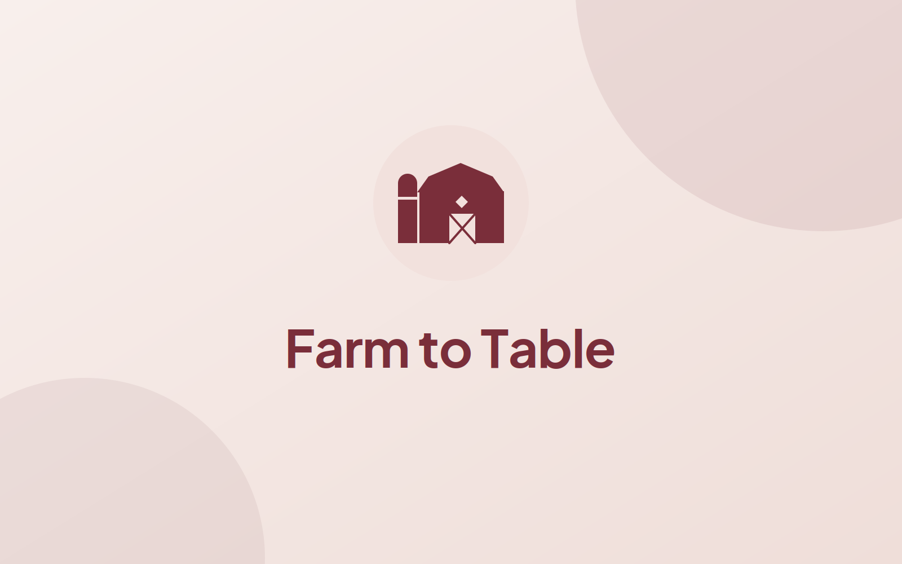

A platform connecting people directly with local farmers for bulk beef purchases — taking a real problem from concept to working MVP.

The opportunity
Buying meat directly from local farms means better quality and a fairer deal for the farmer — but it's confusing for a first-time buyer. Cuts, quantities, pricing by weight, and pickup logistics all sit outside what most people know how to navigate.
As a co-founder I set out to make that whole path approachable: help a consumer go from curious to confident, and give farmers a straightforward way to sell in volume. I led the user research, shaped the product, and built toward an MVP.
What I owned
This wasn't a brief handed to me — it started from a problem we believed in. I ran the research that shaped what we built, defined the MVP scope, translated findings into user flows and wireframes, and contributed the frontend that turned the idea into something people could actually use.
Add your specifics here: who you talked to, the insight that reframed the product, or the hardest scoping call you made. Concrete beats abstract.
Process
Talked to potential buyers and local farmers to understand both sides of the transaction — what makes someone hesitate to buy in bulk, and what makes selling this way painful for a farmer.
Turned what I heard into a sharp problem statement and a focused MVP — the smallest thing that could prove people would buy beef this way.
Mapped the buyer's journey from discovery to a completed bulk order, deciding what had to be in the first version and what could wait.
Designed the key screens — browsing farms, understanding a bulk order, and checking out — keeping it simple enough for a first-time buyer.
Built frontend components against those wireframes, iterating with the engineering team and validating against real customer feedback as it came in.
Selected screens
Reflection